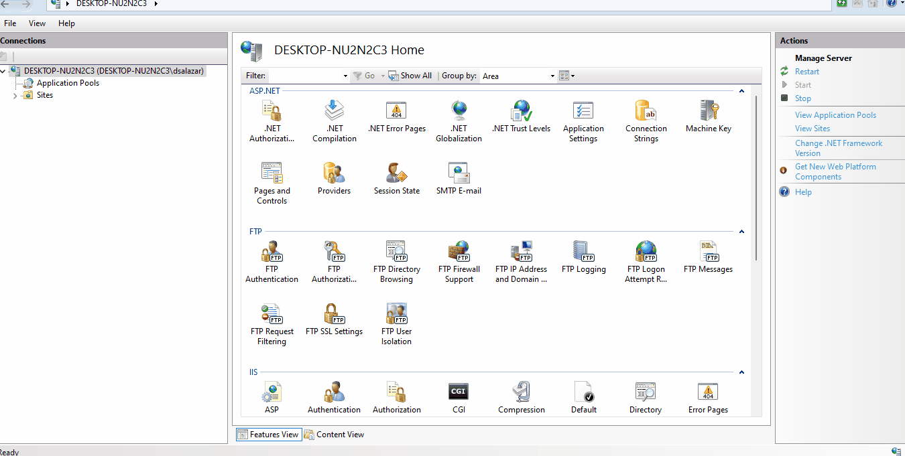

Below are several considerations to keep in mind when using API objects.
PUT and DELETE methods are not enabled by default in the Internet Information Services Manager configuration.
This video shows how to do so:

The names of the parameters are case-sensitive, as you can see in SAC#49817.
In other words, the use of uppercase or lowercase letters must be respected when parameters are defined and used.
It could be important to set the properties such as Web Root and Protocol specification with the appropriate values to make it work in the target Environment.
If the default values are "http://localhost/baseurl/" and "HTTP", respectively, you should set the Environment properties according to the executing Environment before calling the service.
| Backlinks |
| Toc:First Steps with API Objects |